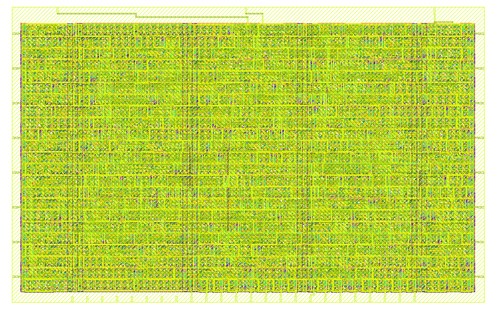

Programmable Stepper Motor Controller
ASIC V2.0 Compact (E01) · GF180D · 160 × 100 µm · 1 MHz
Layout preview. Official shuttle compatibility remains pending. The standalone density checks report M2.4, M3.4, M4.4, M5.4, and MT.3.
GDSII · OASIS · SHA-256 checksums
Open 3D viewer · Open Tiny Tapeout Explorer
2D layout

IEEE Open Silicon Bootcamp 2026 Team (provisional credit). Apache 2.0 license · Attribution